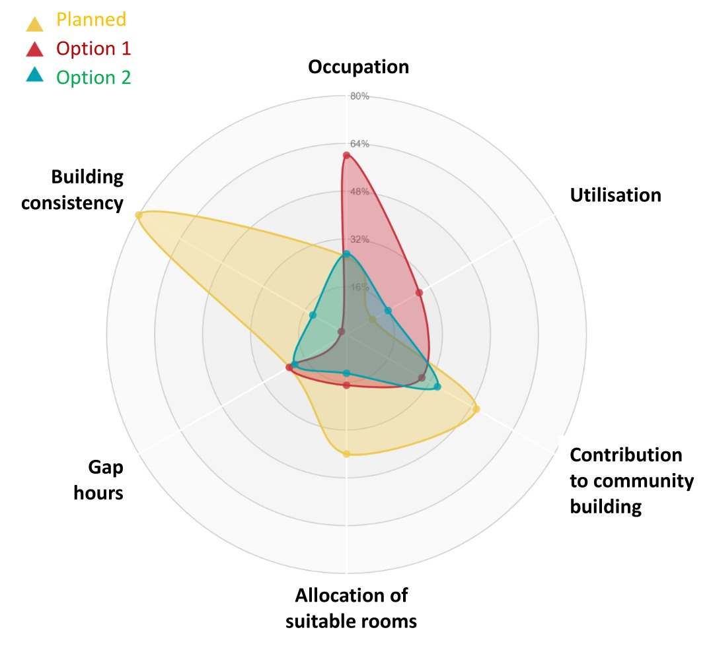
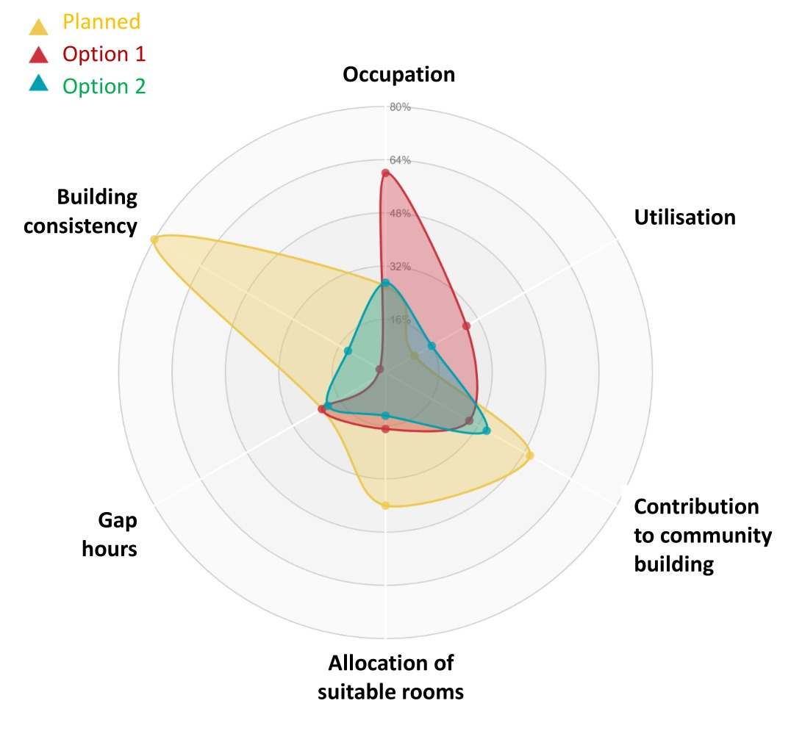

Roosterradar
This is a work in progress, but the goal is to make something like the image below based on schedules and the sensor data.
This is a work in progress, but the goal is to make something like the image below based on schedules and the sensor data.
